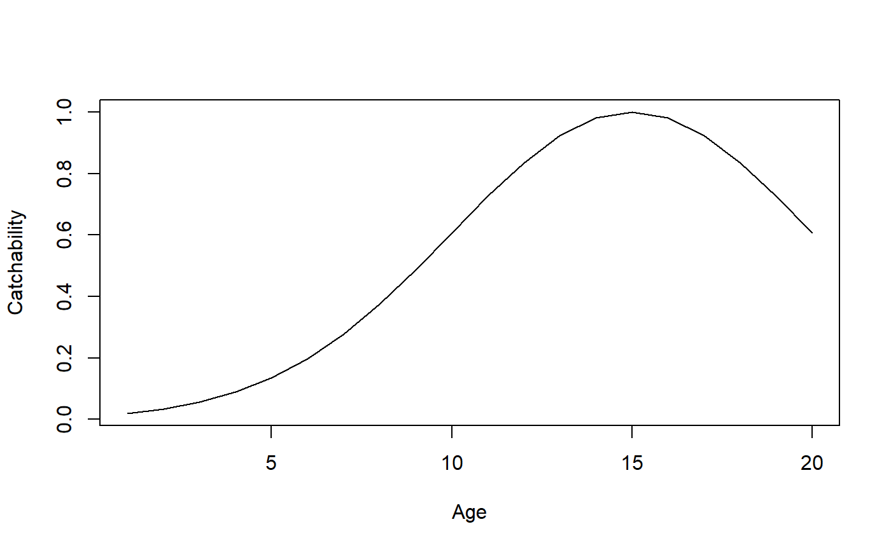

library(SimSurvey)
Built-in closures
The SimSurvey package makes frequent use of “closures”, which are functions that contain data and return functions (Wickham 2014), to control how the simulations are structured. There are various closures built into the package and the data supplied to these closures tend to be parameter inputs and the closures return functions that require inputs such as ages and/or years. This was done to avoid the repeated specifications of key arguments, such as ages and years. Moreover, this approach provides an option for advanced R users to inspect and modify the closures implemented in the package to supply custom closures with alternate equations. For instance, the sim_logistic closure was created to control the shape of survey catchability and it requires parameter inputs that control the shape of the logistic curve and it returns a function that requires a vector of ages.
sim_logistic <- function(k = 2, x0 = 3, plot = FALSE) { function(x = NULL) { y <- 1 / (1 + exp(-k * (x - x0))) if (plot) plot(x, y, type = "b") y } }
Such that when this closure is run, the object returned is a function.
ages <- 1:20 logistic_fun <- sim_logistic(k = 1, x0 = 5) logistic_curve <- logistic_fun(ages) plot(x = ages, y = logistic_curve, xlab = "Age", ylab = "Catchability", type = "l")

Notice that some simple plotting code has been included inside the sim_logistic closure, as it is with the other closures included with SimSurvey, such that when plot = TRUE a plot is automatically generated. This is useful for visual explorations of parameter settings.
When these closures are supplied to the core functions of SimSurvey, the argument ends up being a function and this function is used internally to control various aspects of the simulation, such as the shape of survey catchability. The internal inputs to these functions (e.g. ages and years) can therefore be dynamic.
set.seed(438) sim <- sim_abundance() %>% sim_distribution() %>% sim_survey(n_sims = 5, q = sim_logistic(k = 1, x0 = 5))
Custom closures
Users are not restricted to the limited number of parametric relationships captured inside the closures built into the SimSurvey package. The code can be copied and modified to impose different relationships. For instance, the sim_logistic closure can be modified to make a sim_gaussian closure for use in the sim_survey function to impose dome-shaped survey catchability.
sim_gaussian <- function(a = 1, b = 10, c = 5, plot = FALSE) { function(x = NULL) { y <- a * exp(-((x - b) ^ 2) / (2 * c ^ 2)) if (plot) plot(x, y, type = "b") y } } gaussian_fun <- sim_gaussian(b = 15, c = 5) gaussian_curve <- gaussian_fun(ages) plot(x = ages, y = gaussian_curve, xlab = "Age", ylab = "Catchability", type = "l")

And this closure can be used in lieu of sim_logistic.
set.seed(438) sim <- sim_abundance() %>% sim_distribution() %>% sim_survey(n_sims = 5, q = sim_gaussian(b = 15, c = 5))